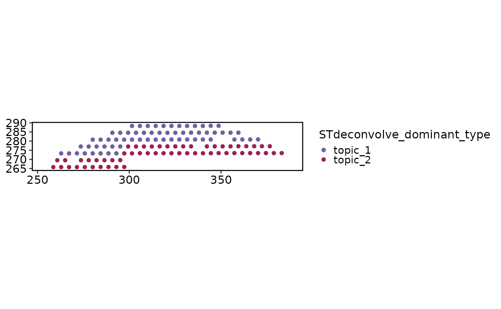
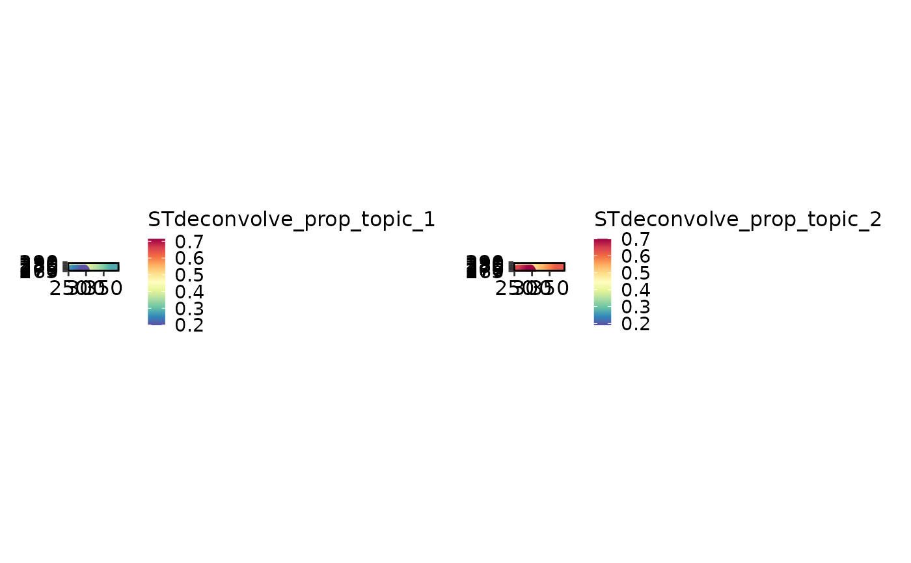
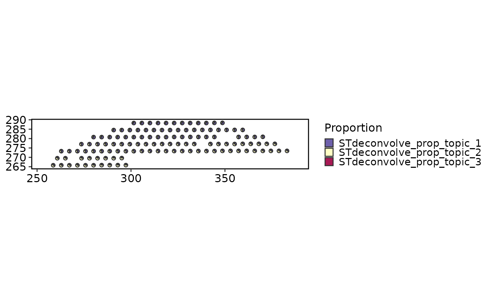

Run STdeconvolve reference-free spatial deconvolution
Source:R/RunSTdeconvolve.R
RunSTdeconvolve.RdEstimate spot-level topic proportions from a spatial Seurat object using
the optional STdeconvolve package.
Usage
RunSTdeconvolve(
srt,
assay = NULL,
layer = "counts",
features = NULL,
k = NULL,
k_candidates = 2:9,
opt = "min",
clean_counts = TRUE,
clean_counts_params = list(),
restrict_corpus = TRUE,
restrict_corpus_params = list(),
fit_lda_params = list(),
get_beta_theta_params = list(),
prefix = "STdeconvolve",
tool_name = "STdeconvolve",
store_results = TRUE,
round_counts = TRUE,
verbose = TRUE,
...
)Arguments
- srt
Spatial
Seuratobject used as the RCTD query.- assay
Assay used in
srt. IfNULL, the default assay is used.- layer
Assay layer used as STdeconvolve input.
- features
Features used for RCTD. If
NULL, shared features are used.- k
Number of topics. If
NULL, models are fit overk_candidatesandSTdeconvolve::optimalModel()is used to choose a model.- k_candidates
Candidate topic numbers used when
k = NULL.- opt
Optimal model selector passed to
STdeconvolve::optimalModel().- clean_counts
Whether to call
STdeconvolve::cleanCounts().- clean_counts_params
Additional parameters passed to
STdeconvolve::cleanCounts().- restrict_corpus
Whether to call
STdeconvolve::restrictCorpus().- restrict_corpus_params
Additional parameters passed to
STdeconvolve::restrictCorpus().- fit_lda_params
Additional parameters passed to
STdeconvolve::fitLDA().- get_beta_theta_params
Additional parameters passed to
STdeconvolve::getBetaTheta().- prefix
Prefix for metadata columns.
- tool_name
Name used to store detailed results in
srt@tools.- store_results
Whether to store detailed RCTD results in
srt@tools.- round_counts
Whether to round non-integer counts before model fitting.
- verbose
Whether to print the message. Default is
TRUE.- ...
Additional parameters passed to the RCTD run step.
Value
A Seurat object with topic proportions in metadata and detailed
results stored in srt@tools[[tool_name]] when store_results = TRUE.
Examples
data(visium_human_pancreas_sub)
spatial <- subset(
visium_human_pancreas_sub,
cells = colnames(visium_human_pancreas_sub)[1:120],
features = rownames(visium_human_pancreas_sub)[1:400]
)
#> Warning: Not validating Centroids objects
#> Warning: Not validating Centroids objects
#> Warning: Not validating FOV objects
#> Warning: Not validating FOV objects
#> Warning: Not validating FOV objects
#> Warning: Not validating FOV objects
#> Warning: Not validating FOV objects
#> Warning: Not validating FOV objects
#> Warning: Not validating Seurat objects
topic_weights <- data.frame(
STdeconvolve_prop_topic_1 = seq(0.75, 0.20, length.out = ncol(spatial)),
STdeconvolve_prop_topic_2 = seq(0.20, 0.70, length.out = ncol(spatial)),
STdeconvolve_prop_topic_3 = 0.10,
row.names = colnames(spatial)
)
topic_weights <- topic_weights / rowSums(topic_weights)
spatial <- Seurat::AddMetaData(spatial, topic_weights)
spatial$STdeconvolve_dominant_type <- sub(
"^STdeconvolve_prop_",
"",
colnames(topic_weights)[max.col(topic_weights)]
)
spatial$STdeconvolve_max_prop <- apply(topic_weights, 1, max)
SpatialSpotPlot(
spatial,
group.by = "STdeconvolve_dominant_type",
overlay_image = FALSE,
coord.cols = c("x", "y")
)

STdeconvolvePlot(
spatial,
topics = 1:2,
overlay_image = FALSE,
coord.cols = c("x", "y")
)

if (requireNamespace("scatterpie", quietly = TRUE)) {
STdeconvolvePlot(
spatial,
plot_type = "pie",
overlay_image = FALSE,
coord.cols = c("x", "y")
)
}

if (
requireNamespace("STdeconvolve", quietly = TRUE) &&
identical(Sys.getenv("SCOP_RUN_SPATIAL_BACKEND_EXAMPLES"), "true")
) {
spatial <- RunSTdeconvolve(
spatial,
assay = "Spatial",
features = rownames(spatial)[1:300],
k = 3,
verbose = FALSE
)
}